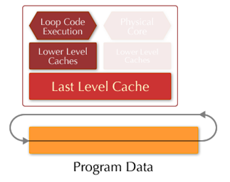
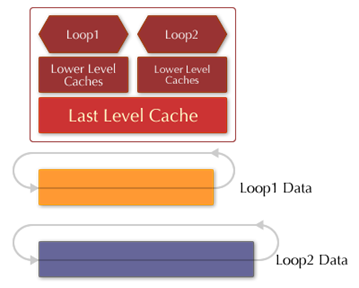
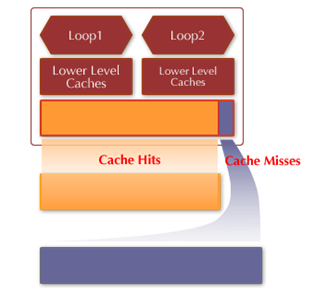

|
High performance computing and software laboratory the ohio state university |
|
ULCC Programmer¡¯s Guide v0.1.0 |
|
|
|
|
|
|
|
February 13, 2011 |
|
|
1 Concepts
We use the term cache to specifically refer to the last level cache shared by a set of CPU¡¯s. The definition of a CPU is the same as its definition in Linux system interface, sched_setaffinity. As a matter of fact, in the current implementation of ULCC, the cc_cpuset_t data structure is directly defined as cpu_set_t, and therefore the successful compilation of ULCC source code depends on the availability of libcpuset library in the system (which is true on most Linux systems). On systems where libcpuset is not available, the user may change the definition of cc_cpuset_t and associated interfaces to use, for example, an integer array or a bit mask to represent a CPU set.
There are five key concepts, corresponding to five data structures, in ULCC: data set, thread set, CPU set, cache slot and cache region. A data set defines a set of data to be accessed by user program in its virtual space; a thread set or a CPU set is a set of threads or logical CPUs that will access the data set; a cache slot specifies a slot of cache space requested by user. Basically, a data set defines the data; a thread set or a CPU set tells where the data will be used; a cache slot specifies how much cache space for these data. The details of each data structure are explained below.
1.1 Data set
typedef struct cc_dataset_s
{
unsigned long *d_start;
unsigned long *d_end;
int d_max;
int d_count;
} cc_dataset_t;
There are four memory variables in a cc_dataset_t structure (cc stands for cache control, which is the prefix for the names of all ULCC interfaces and data structures). A data set can hold a maximum of d_max virtual memory regions. The current number of virtual memory regions in this data set is d_count, and the ith virtual memory region is specified as [d_start[i], d_end[i]). Since ULCC can only change physical page mappings in a granularity of pages, only the part of whole pages in a virtual memory region will be considered in the cache space allocation phase. This should not impair the effectiveness of cache control, because the preceding and trailing sub-page parts are usually neglectable relative to the main pages in the middle of a memory region.
ULCC provides some utility functions to manipulate a data set, whose definitions can be found in src/util.h.
1.2 Thread set
typedef pthread_t cc_tid_t;
typedef struct cc_thrdset_s
{
cc_tid_t *t_threads;
int t_max;
int t_count;
} cc_thrdset_t;
A cc_thrdset_t structure contains a set of thread ids, t_threads. In the current implementation, the type of thread id, cc_tid_t, is the same as POSIX Threads pthread_t. A thread set contains a maximum of t_max thread ids, and the current number of ids held is t_count.
ULCC provides a set of utility functions to operate on a thread set, which are defined in src/util.h.
1.3 CPU set
typedef cpu_set_t cc_cpuset_t;
cpu_set_t, which is a GNU extension to C library, is used as the CPU set type in current ULCC implementation. The user should use the macros provided in GNU C to specify the set of CPU¡¯s from where the data set will be accessed.
1.4 Cache slot
typedef struct cc_cacheslot_s
{
int s_size;
int s_type;
} cc_cacheslot_t;
A cache slot defines two parameters: s_size is the size (in bytes) of the cache space required; s_type is the type of the cache space required. ULCC interprets a cache slot and allocates a cache space that is at least s_size bytes large and is of s_type type. s_type can have the value of CC_PRIVATE or CC_SHARED. CC_PRIVATE means the allocated cache space has to be private, comprised of cache colors that haven¡¯t be reserved by any other allocation; CC_SHARED means the cache space can share and meanwhile be shared by other shared cache spaces. Private cache spaces are usually allocated to hold strong locality data sets, while shared cache spaces are often used for weak locality data sets.
As we know, a cache can be divided into many regions according to page colors. Instead of directly specifying cache colors, ULCC provides an abstraction, cache slot, to let users specify the cache space to be allocated. Separating user programs from low-level cache colors provides at least two benefits: (1) using a cache slot to specify a cache space requirement increases a program¡¯s portability across machines with different cache configurations; (2) ULCC has more opportunities to optimize cache space allocation if no fixed cache colors are specified. Interested users may refer to the paper and the source codes (in cache.c) for details of this idea.
1.5 Cache region
typedef struct cc_cacheregn_s
{
unsigned char color_map[ULCC_NUM_CACHE_COLORS / 8];
} cc_cacheregn_t;
A cache region structure is a bit mask representation of a set of cache colors. This is a low-level data structure to specify a cache space. The total number of cache colors can be queried through ULCC utility function cc_cache_colors(), then the available cache colors range from 0 to (cc_cache_colors() ¨C 1). Users should always use ULCC utility functions to manipulate a cache region structure (see src/util.h ).
Even though the cache slot structure provides benefits of hiding low-level cache colors from user programs, there are times when users want to directly control the allocation of cache colors. Suppose the system only runs one ULCC application written by the programmer (which is a common case in high-performance computing scenario), then directly specifying which cache colors should be allocated for which data sets is usually more efficient. Therefore, in real world application, we suggest experienced programmers with full control over the system use cc_cacheregn_t and the low-level function cc_remap() to do cache space allocation (see src/remapper.h).
2 ULCC programming by examples
In this section, we introduce how to write cache-friendly programs using ULCC. For the sake of simplicity, we use two contrived examples to demonstrate the main ideas. However, the principles and approaches are the same when optimizing real-world applications. The first example program shows how to improve the performance of a loop that repeatedly scans through an array whose size is larger than the cache size. This example demonstrates that more optimization opportunities can be exposed to programmers by ULCC, not only on multi-core processors but also on traditional single-cores. The second example uses ULCC to improve the performance of a strong-locality loop thread co-running with a weak-locality loop thread. This example shows how to use ULCC to partition cache space among data sets with different locality strengths, thus to improve the performance of accessing both kinds of data sets.
The experimental system used by the authors to run the programs in this tutorial is a machine with an Intel Core i5 processor that has a 3-MiB last level cache shared by two CPU cores. Each CPU core supports two simultaneous threads in hardware. The memory size is 4GB. Linux OS with 2.6.35 version kernel is installed on the machine. GCC 4.3
2.1 Improving the performance of a `weak-locality¡¯ loop
In this example, a program repeatedly scans an array of objects whose total size is larger than the cache size, as is shown in Figure 1. Suppose LRU replacement algorithm is used in the hardware cache. Since the array is too large to fit into the cache, accessing data in the tail of the array will evict data in the head of the array from the cache. Thus, the program will suffer a lot of cache misses in each loop and the performance of the program is impaired.
If MRU replacement algorithm in used the hardware cache, then we won¡¯t have such problem. However, programmers have no control over the hardware cache replacement algorithm, and a MRU algorithm may introduce new problems for other programs. Now we show how to optimize the performance of this program with ULCC library. The approach we take can be summarized as follows:
1. Partition the cache space into two regions: one large region for data that we decide to keep in the cache across different loops, and one small region for the rest of the array data;
2. Using ULCC, we map part of the data in the array to use the large cache region, and we map all the rest data to use the small cache region.

Figure 1. A program that repeatedly scans an array of objects in a loop.

Figure 2. Improve the performance by mapping part of the array to a large cache region and mapping the rest of the array to a small cache region.
As illustrated in Figure 2, after using ULCC to partition the cache space and map data into the cache accordingly, LLC misses can be restricted to a small cache region and the data loaded into the large cache region can be kept across different loops. Thus, the total number of cache misses can be reduced and the performance will be improved.
The source code of this example is given in the test1() routine in the test/test.c file. You should change the parameters of the program to fit the cache size of your own machine before running the program. Here are the extracted main code:
cc_aid_t aid_strong, aid_weak;
cc_cacheslot_t cs;
¡ ¡
/* Allocate a private cache space for part of the large data, such that this part of data can be kept in LLC across different loops, w/o incurring extra misses. */
cs.s_type = CC_PRIVATE;
cs.s_size = 4096 * 680; /* cache size slightly bigger than data size 4096 * 640 */
aid_strong = cc_alloc2((unsigned long)start,
(unsigned long)(start + 4096 * 640), NULL, &cs, 0);
/* We don't have enough cache space to hold the rest of the large data, so we squeeze them into a small shared cache space, which is separated from the previously allocated private space. */
cs.s_type = CC_SHARED;
cs.s_size = 4096 * 60;
aid_weak = cc_alloc2_cpus((unsigned long)(start + 4096 * 640),
(unsigned long)(end), NULL, &cs, 0);
/* Do the computation: scan the array repeatedly */
for(i = 0; i < 10000; i++)
{
for(p = start; p < end; p += 64)
{
c = *p;
}
}
/* Deallocate */
cc_dealloc(aid_strong);
cc_dealloc(aid_weak);
On our machine, we measured the time to do the computation without and with the help of ULCC. It was seen that with the help of ULCC the execution time of the loop was reduced by over 30%. The performance improvement is mainly due to the reduction of cache misses after using ULCC to partially protect array data in the cache. This optimization cannot be easily achieved without the help of ULCC.
2.2 Improving the performance of a `strong-locality¡¯ loop co-running with a `weak-locality¡¯ loop
Having shown how to use ULCC to optimize a single-thread program, we now use another example to demonstrate how to reduce cache pollution when threads are co-running on multiple cores sharing the same cache.
In this example, as shown in Figure 3, two threads are co-running on two cores sharing the same cache. These two threads all repeatedly scan arrays in a loop. The array scanned by the first thread is small enough to fit into the cache, while the size of the array scanned by the second thread is much larger than the cache size. Suppose we want to hold the first array in the cache and prevent its data from being evicted by the second thread. Since the second array is too large, we don¡¯t care whether the performance of the second thread will be improved (as we will show later, the execution time of the second thread will also be reduced as we optimize the cache for the first thread).
The approach we take to optimize this case is similar to the first one. We map the data in the first array to a large-enough private cache region in the cache, and we map the data in the large array to the rest of the cache space. In this way, accessing the large array will only evict its own data in the cache, and the data of the small array can be kept in the cache and reused across different loops. This is illustrated in Figure 4.

Figure 3. Two threads co-running on a dual-core processor; each thread scans an array in a loop.

Figure 4. Give the small array enough cache space, while restrict the cache usage of the large array into a separate small cache region.
The source code for this example is given in the test2() procedure in test/test.c file. Some important code snippets are extracted here:
cs.s_type = CC_PRIVATE;
cs.s_size = size1 + cc_cache_size() / cc_cache_colors() * 2;
aid_data1 = cc_alloc2((unsigned long)data1_start,
(unsigned long)data1_end, NULL, &cs,
CC_ALLOC_NOMOVE | CC_MAPORDER_RAND);
cs.s_type = CC_SHARED;
cs.s_size = cc_cache_size() / cc_cache_colors() * 1;
aid_data2 = cc_alloc2((unsigned long)data2_start,
(unsigned long)data2_end, NULL, &cs, 0);
We ran the program and compared the execution times of the first thread and the second thread without and with ULCC. It was found that after using ULCC, the execution time of the strong-locality loop thread was reduced by almost 50% on average, and the execution time of the weak-locality loop was also reduced by over 20%. The performance improvement for the second thread is mainly because, after using ULCC to make the first array held in the cache, fewer memory accesses are generated by the first thread and the contention over memory controller and memory bandwidth seen by the second thread is reduced.